May 12May 12 comment_1196398 Week 1/2 Work - Put in wrong thread initally because blackboard course code is outdatedFor the first two weeks I have been working on my second assessment. This involved initially creating a soundtrack for the game. I did this in the bandlab online daw. I then went into Cakewalk to cut, mix, split and export the track. The track was split into five sections, one for each level. The idea was simple, have each section of the track begin and loop when in the level zone. Decorations and platforms would then respond to the bass of the music, simple, right? Wrong.My next move was to make the MetaSound which extracted the bass from the track - essentially the bass analyser.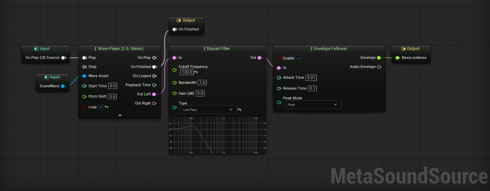This just used a low pass filter to remove the unnecessary sound from the track, just leaving pretty much just the bass. I set it to 120hz as that is the range my bass is in.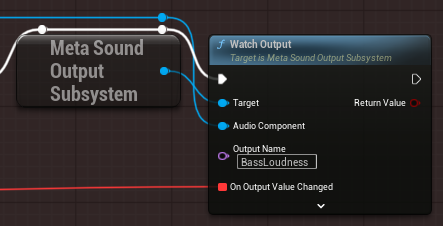Initially I had this logic in every object that moves but then I reached the sound limit and the level went silent so I had to optimise it using a manager with events and all 5 levels audio components attached in an array. This manager then held the attenuation and activation settings for the entire level so you could drag out the audio from the manager to ensure you couldn't hear every level simultaneously.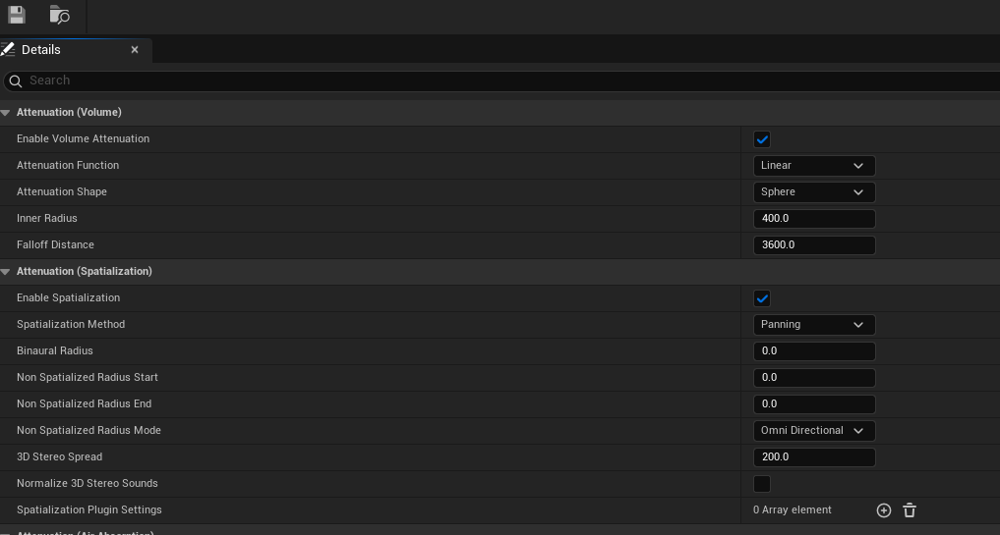This was my first time using attenuation, but combined with level checkpoints, which activated the section of the level you went into, it became very manageable.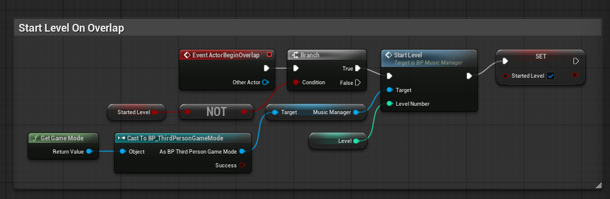This was my first time using a fancy initialisation chain with event and all of the obstacles listening, but storing my manager in the gamemode felt optimised and made it easy to reference later down the line.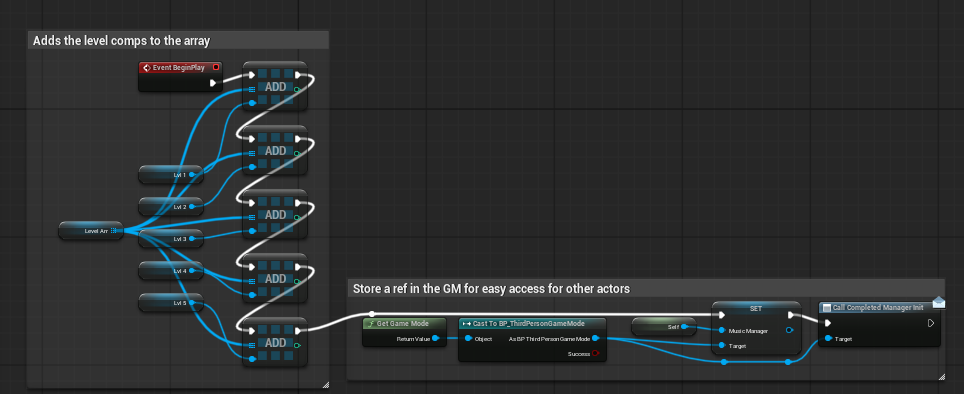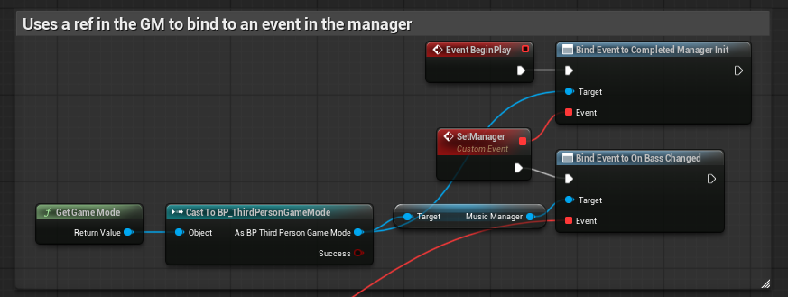I simply had an object parent which listened to the event, this meant every object could be initialised simultaneously when the level began and was set in the manager. The bass changing was also made an event. This was then fed into a sound change function which was overridden by all of the object children.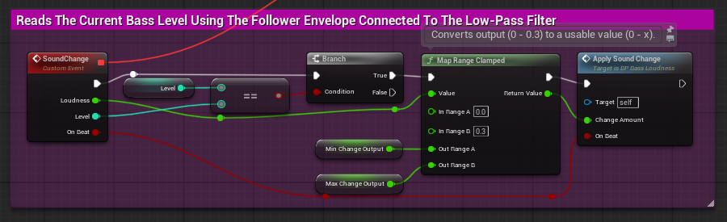The map range clamped node is great as it converts my 0 to 0.3 bass range to a customisable range e.g. 0 to 10 etc. This meant different objects could set different ranges, so some blocks could move backwards etc.The on beat output was a new one I added which is essentially just tied to a nearly equal node. I did a lot of testing and found the bass was around 0.11484 when a beat hit. Nearly equal was the ideal node as it has a built-in tolerance threshold.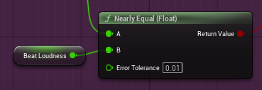Every object has it's own sub-class of the main object class. For instance, the moving blocks all inherit from the main moving block parent with the lerp code. This means I can make children with set level variables, meaning they will only start moving when the correct checkpoint is hit. This is tied to the logic in the sound manager.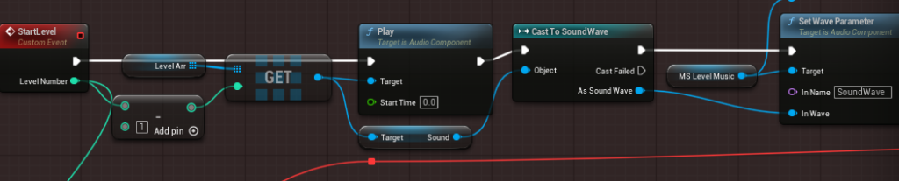To get this to work I had to get the meta sound to take a sound wave input, which is why I have the sound parameter node on the right. However, this does mean that only one level's sound can be analysed at a given time as it is done in the manager. Therefore, I may want to add some logic to check for a stop checkpoint. This would stop the blocks moving and the music from playing after finishing a level. This would mean the blocks don't ever end up responding to the wrong audio.Another object I have is the expanding decoration. This one is fairly simple, and is currently applied to the level floor and level wall pillars. It merely inherits from the object parent, but uses a custom value range and the audio changed function to set it's scale when the bass changes.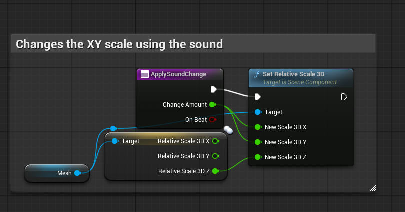This is the parent which the floor and pillars inherit from.The next object is the flashing lights. This is probably the thing that took the next longest, after the main music manager singleton. This essentially uses the beat to iterate through different colours in a light array.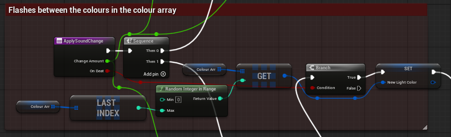However, I did add an optional section where the light can just pulse between two gradients, which I may use on select objects in later levels, or apply to an emissive material in the future.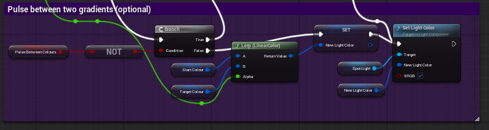I just had this work if the optional bool was set on the object, I found it worked best when going from pure white to another colour, it didn't look great when pulsing between two colours, but going from white to another looked good as the brightness would intensify with the bass, so a dim white made sense when going to a bright red.The brightness intensifying is separate logic which always occurs, even when the colours are being iterated through randomly. This just made the whole level look more intense and made sense. Additionally, I had the colours iterate through a set array of colours which made it easy to pair different lights together however, it didn't look quite crazy enough and, unsurprisingly, was too predictable. Instead the random ROYGBIV array looks far superior.I probably over engineered the light intensity code but I think this looked great and worked across multiple ranges fine.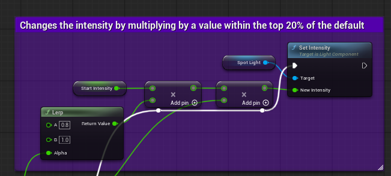Lastly, I made the character movement component not care about the x velocity of objects you're standing on, so you don't get flung from the platforms when traversing the level. This ended up being a simple checkbox.The full track: Whole_Track.ogg 2.85 MB · 0 downloads Edited May 12May 12 by Jake Astles Explained lateness and edited ogg size. Link to comment https://daf.staffs.ac.uk/topic/87239-astles-jake-a013867o/ Report
May 12May 12 Author comment_1196639 Week 3 - 6 postFor weeks 3 to 6 I’ve basically been doing what I should’ve done from the start: stop just “adding more stuff” and actually improve the system underneath so it can handle more levels, more decoration types, and more movement variations without everything turning into spaghetti. The main focus was upgrading the rhythm-driven pipeline using Quartz, adding way more decoration responses, and tightening up the startup flow so the level events are actually reliable and consistent, as opposed to “it usually works if I press play twice”.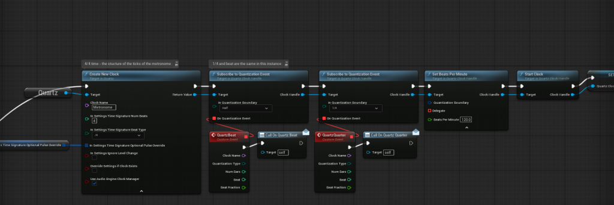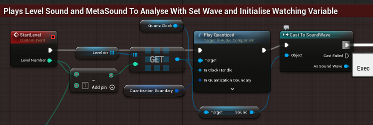The biggest upgrade though was the timing. I ripped out the old MetaSound envelope follower that was analysing the bass and implemented the Quartz system. The idea was simple, just use a 120bpm metronome to trigger the blocks, right? Wrong. It took a bit of brain-bending to understand how to queue up the music with a quantized play node before starting the clock, but now the timing is sample-accurate, as opposed too relying on the visual frame rate. Thus, the platforms move perfectly on beat every single time without any lag.Additionally, I’ve cleaned up the parent/child approach for the decorations. The parent class now handles the boring shared bits (binding to events, initialisation timing, common ranges, etc.) and the children just override the “what do you do when the beat hits / bass changes” part. This also made it easier to swap behaviours between levels, because I’m not duplicating logic. I can just adjust level variables and event timing.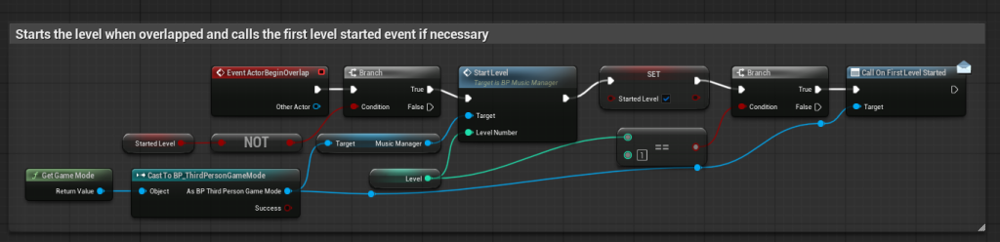For the actual audio side of things, I went on a bit of a side quest. I went to the library and dug through some old DVDs from a computer music magazine, absolute gold for this kind of research. I managed to find this limited edition synth called Bazille! I fired it up in my DAW to create some really cool, heavy tones. I also learnt a lot about exporting audio from a DAW using different buses and stuff to keep my stems organized before bringing them into Unreal.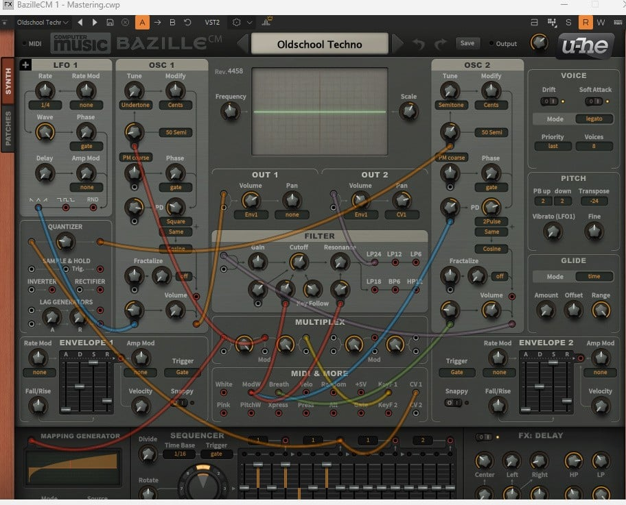I also learnt a ton about using the ffmpeg command line for audio. Instead of always rendering through a DAW just to shorten a .wav file, I can use an ffmpeg command to trim it bit-for-bit losslessly using -c copy. This is actually higher quality than exporting from a DAW, where the software might apply microscopic dithering or other processing.But the real meat of these weeks was learning how to properly use MetaSounds to carve out sounds and make them actually sound good. I used the audio I made with Brazzite and started messing with ring modulation. I was multiplying sine waves together to make these crazy robotic sounds, but I realized that if you multiply them you get sum and difference tones, essentially cancelling sound waves out or completely destroying the original pitch. It taught me that audio engineering isn't about guessing what sounds good; it's about understanding the math underneath.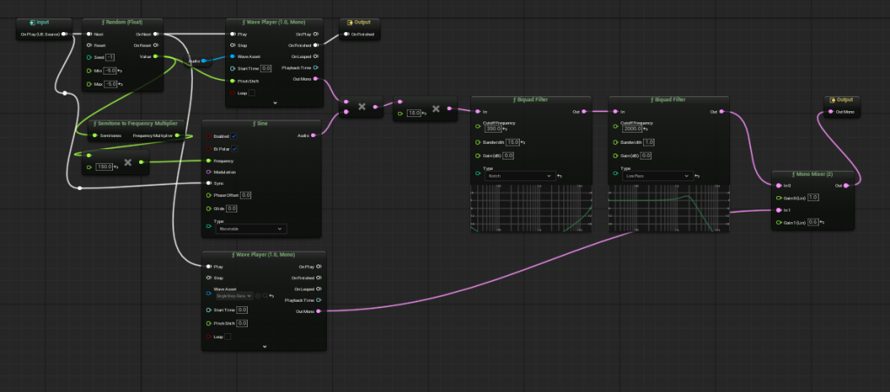One of my earliest mistakes was setting the Attack Time on ADSR envelopes to exactly 0.0. This created a digital “smack”—an audible pop at the start of every sound. I also realized I was misunderstanding what "Sustain" actually means. I thought it was another fade time, but it's not—it's a level. ADSR stands for Attack, Decay, Sustain, Release. Attack is how long to reach peak. Decay is how long to drop from peak to the Sustain level. Sustain is where the audio hangs out while you're holding the note. The fact that Sustain is a level and not a time was genuinely confusing at first. Carving out notches for specific frequencies was so cool and it actually worked, just playing around with it and looking at the waveform to snipe specific frequencies you didn't like with a big notch filter made me feel like a proper techical audio programmer - and worked!I also learnt about how bad it is to chain basic bicubic (Biquad) filters together. I was trying to filter off a harsh metal smack at the start of my sounds by running it through 5 biquad nodes in a row. This was causing a massive CPU hit and "zipper noise"—that harsh, stepping sound as the filter coefficients snapped—which had a terrible affect on the mix. Instead, I swapped to the fancy multi filter, the State Variable Filter (SVF). It calculates low pass, high pass, and band pass all at once and is so much better for continuous movement logic.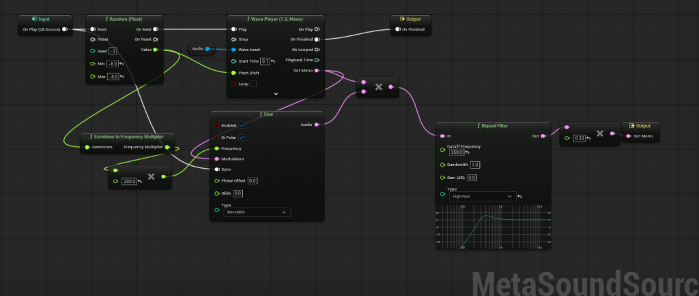 To keep all this new audio logic organized, I started using MetaSound patches. These are really cool because they let you package up a bunch of complex node math into one clean, reusable node. I set up the main events so they're triggered flawlessly by the Quartz clock's quarter notes, and the MetaSound patches handle the internal alternating filters and sound carving.I even tried doing the “every other trigger enable extra filter” trick inside the MetaSound itself using a Trigger Counter and Modulo math. I learnt that if you’re spawning one-shot instances, the MetaSound has no memory. It dies and respawns, so the counter restarts. For footsteps or movement one-shots, it's better to store that alternating state in the Blueprint and pass it in as a parameter. Everything is just way more scalable now and the game feels incredibly locked in.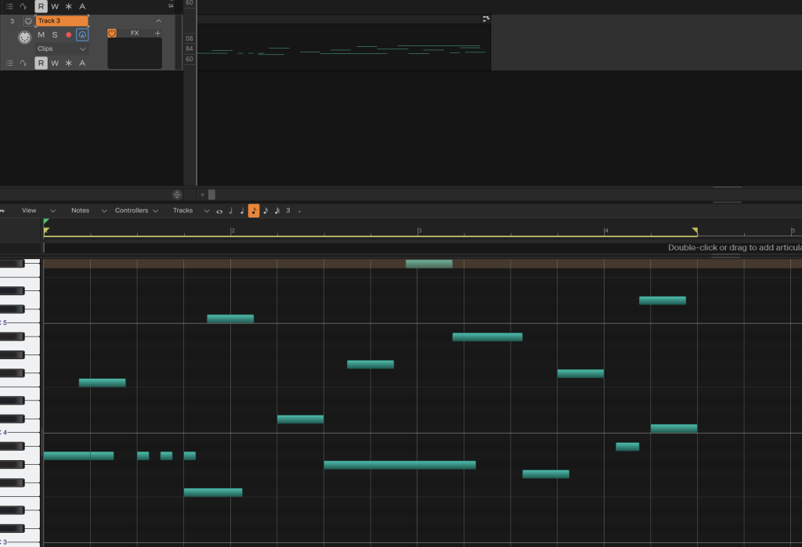 Link to comment https://daf.staffs.ac.uk/topic/87239-astles-jake-a013867o/#findComment-1196639 Report
May 12May 12 Author comment_1197738 Week 7 - 8/9 - Final Levels and RefinementsThis has been the final push too get the project across the finish line, and honestly, the architecture I built in the earlier weeks really saved me here. I've added the remaining levels in which are quite similar to the first level in terms of their underlying logic, but because the system is so modular, they each have a completely different feel.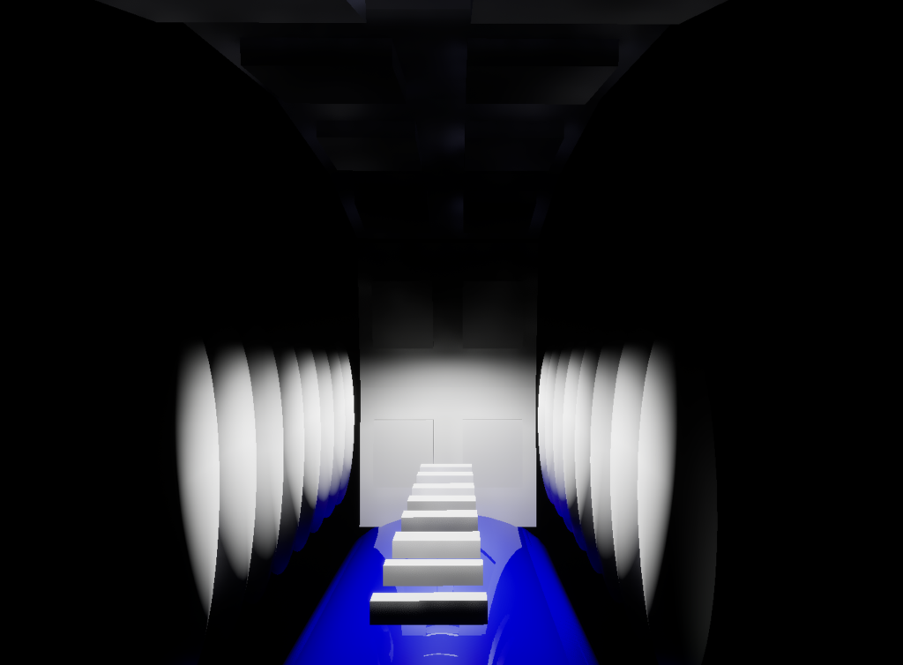One of the best things I realized during this phase was just how much the hierarchy convenience helped my workflow. Because I have those exposed variables on the parent class, I didn't have to write a single line of new code to make Level 5 feel unique. I just dragged the base platforms in and used the Details panel to flip the movement directions and scale ranges. I could make a platform swing horizontally on a 1/8th note beat or pulse vertically on a quarter note just by changing a dropdown and a Vector value. This had a massive affect on how fast I could iterate; I was basically level designing at the speed of thought.Additionally, I finally fixed that annoying physics issue where the player would get flung off a platform when it moved too fast. It turns out I just needed to go into the Character Movement Component and tick a few boxes to stop the platforms from imparting their base velocity to the player. It was such a simple fix for something that felt like a huge bug, and also, it makes the platforming feel way more "fair" and tight. Thus, the player can now focus on the rhythm of the jumps without worrying about the engine's physics acting up.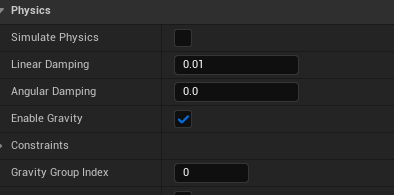I did run into a few more "Ghost" errors while cloning the project for testing. Their were times when the Blueprints just seemed to go stale and stop communicating for no reason. I found out that Unreal sometimes holds onto old memory addresses in the background, but a quick "Refresh All Nodes" and a proper compile/save usually fixed it. It taught me that sometimes the code isn't broken, the compiler just needs a nudge to realize everything has changed.Overall, seeing all five levels working with the Quartz timing is great. The way the environment responds to the Brazzite synth patches I carved out in MetaSounds makes the whole thing feel like a cohesive product. I’ve gone from barely being able to get one block to move to having an entire multi-level system that is easy too manage and completely customisable. 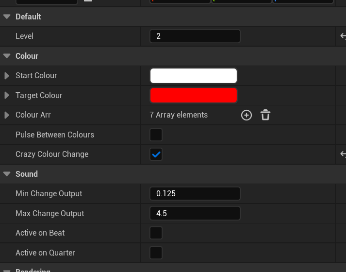 Link to comment https://daf.staffs.ac.uk/topic/87239-astles-jake-a013867o/#findComment-1197738 Report

")